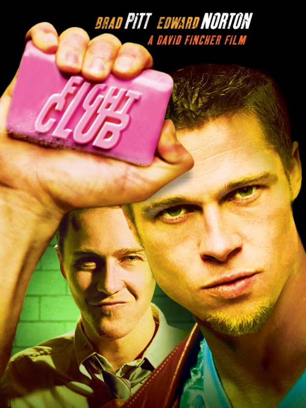
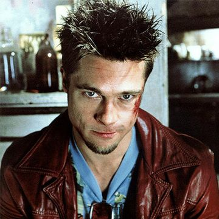
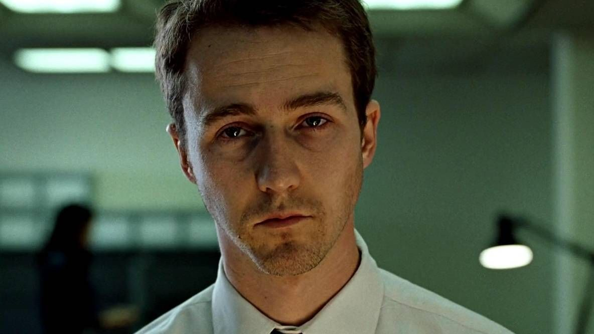
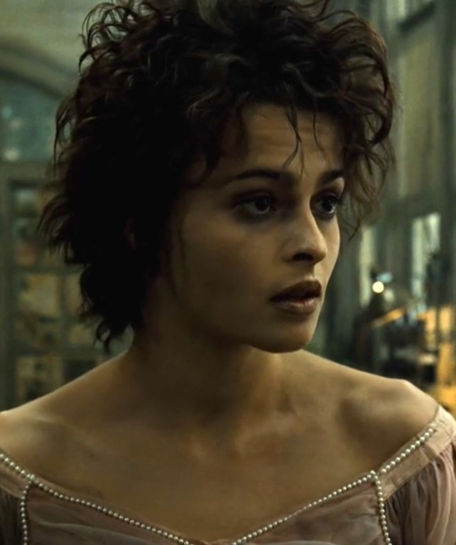

Безымянный офисный клерк страдает хронической бессонницей, выгоранием и потребительской апатией. Его жизнь радикально меняется после встречи с харизматичным торговцем мылом Тайлером Дёрденом. Вместе они создают подпольный бойцовский клуб, который быстро эволюционирует в радикальную антикапиталистическую организацию «Проект „Разгром“».
Фильм — жёсткая сатира на общество потребления, кризис мужской идентичности в постиндустриальном мире и попытку вырваться из системы через саморазрушение и боль. Финальный твист переворачивает всё: Тайлер оказывается не реальным человеком, а альтер-эго главного героя, порождённым его расщеплённой психикой. Это история о том, как человек пытается вернуть себе контроль над жизнью, создавая монстра внутри себя.



Первое правило: ты не говоришь о Бойцовском клубе.